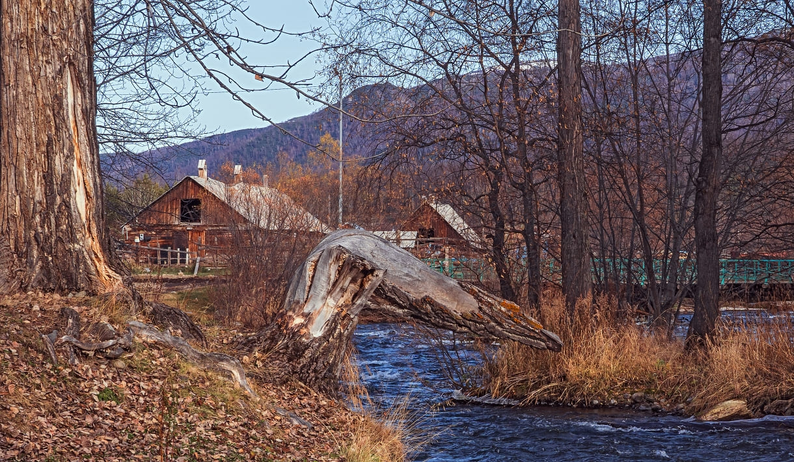

Все достопримечательности на карте
Долина гейзеров
Долина гейзеров — это восьмикилометровое ущелье, по которому течёт река Гейзерная. Таких каньонов на Камчатке множество, а уникальность этого места — в большом количестве гейзеров (порядка 60 штук) на небольшой площади. Долина находится на территории Кроноцкого заповедника, а посетить её можно только в сопровождении проводника. С 2023 года ограничено и число путешественников — не больше 30 человек в день. Для прогулок оборудованы настилы, с которых сходить не только запрещено, но ещё и очень опасно: под участком с ярко‑зелёной травкой легко может оказаться котлован с кипятком.
Вулкан Малый Семячик
Чаще всего посмотреть на него можно только с вертолёта (например, во время полёта в Долину гейзеров) — пешие группы сюда водят крайне редко. Но даже вид с высоты оставит незабываемые впечатления. Малый Семячик состоит из трёх конусов, образовавшихся в результате извержений древнего вулкана. После них осталась огромная котловина (примерно 15 километров в диаметре) и сформировался небольшой горный хребет.Главная достопримечательность Малого Семячика — кислотное озеро яркого зелёно‑голубого цвета в одном из кратеров вулкана. Содержание серной кислоты настолько велико, что стальной трос, которые опустили сюда во время исследовательской экспедиции, разъело примерно за 20 минут. Озеро не замерзает зимой. В это время года оно выглядит особенно впечатляюще — зелёно‑голубое пятно среди заснеженных вершин.
Толбачик
Родина неизвестных науке алмазов и два вулкана в одном. Массив состоит из Острого Толбачика — вершины около 3600 метров высотой, у которой нет кратера, и Плоского Толбачика. Последний — действующий вулкан, регулярно напоминающий о себе. В 2013 году после извержения в застывшей лаве Плоского Толбачика учёные обнаружили алмазы, нового типа, которые так и назвали — толбачинскими. Они уникальны по своему составу и раньше нигде не встречались. А ещё местный грунт настолько похож на поверхность Луны, что в 1969 году на площадке вулкана Плоский Толбачик в режиме строгой секретности испытывали первый советский луноход. Опыты оказались удачными — он потом почти год проработал на Луне и передал на Землю больше 20 тысяч снимков. На лавовых полях Толбачика всё ещё встречаются дымящиеся провалы, а некоторые участки в темноте светятся тёмно‑красным — из‑за неостывшей лавы под поверхностью. Самостоятельно подниматься на вулкан опасно — в любой момент исполин может проснуться и начать извергаться, поэтому лучше делать это с опытными гидами в рамках организованного тура.
Курильское озеро
Медвежий рай, куда стоит съездить ради максимальной близости к этим бурым великанам. Курильское озеро — самое крупное на Камчатке место для нереста лососёвых рыб, поэтому медведям здесь раздолье. Для наблюдения за животными в районе водоёма оборудованы специальные площадки с электропастухами — тонкой изгородью под напряжением. Звери спокойно ловят рыбу, а у путешественников есть уникальная возможность делать классные фото.
Водопад Опасный
80-метровый каскад, который образован рекой Вулканная. Опасный считается одним из наиболее известных водопадов на Камчатке. И хотя близко к нему не подобраться (глубокий каньон с осыпающимися стенками — не самое лучшее место для прогулок), виды сверху всё равно оставляют незабываемые впечатления. Грохот водопада слышно издалека. Мощный поток падает в узкое ущелье, а со стороны эта лавина воды выглядит просто фантастически. Добавляют антуражности и стены самого каньона разного цвета — от чёрного до красно‑коричневого. Такая цветовая гамма возникла из‑за различных пород и минералов ущелья. До Опасного всего около 60 километров от Петропавловска-Камчатского. Находится каскад рядом с вулканом Мутновский, поэтому эти две достопримечательности почти всегда включают в маршрут одного путешествия.
Мёртвый лес
Апокалипсис по‑камчатски. Мёртвый лес — большая территория около Толбачика, которая покрыта толстым слоем вулканического пепла и шлака. Дополняют апокалиптическую атмосферу и обожжённые стволы деревьев, среди которых редко попадаются участки зелёной растительности. Появился такой «лес» после извержения в 1975 году, мощность которого была эквивалентна примерно 200 миллионам киловатт. Вулкан бушевал почти полтора года, а река кипящей лавы затопила почти 45 квадратных километров. Всё живое было выжжено, а уцелевшие деревья превратились в чёрные обугленные «столбы». Но природа постепенно восстанавливается, и сегодня в Мёртвом лесу даже попадаются участки свежей растительности. Например, яркие мхи и молодые зелёные деревья. Говорят, в Мёртвом лесу можно даже отыскать хвостовую часть вертолёта Ми-4, который рухнул из‑за огромного количества пепла в воздухе во время извержения.
Кальдера вулкана Узон
Образовалась она примерно 40 тысяч лет назад из‑за разрушения древнего вулкана. После мощного извержения земля просела и получилась вулканическая котловина. В этом исполинском котле диаметром 9 на 12 километров, чего только не увидишь: выбросы пара и горячего газа, кислотные реки, мини‑вулканы, термальные озёра. А ещё здесь даже водятся древнейшие микроорганизмы, живущие при температуре +96,5°С — археи. Кальдера расположена на территории Кроноцкого заповедника, поэтому путешественников всегда сопровождает егерь. Да и медведи здесь встречаются достаточно часто, особенно в тёплое время года. После зимней спячки они с удовольствием разгуливают по нагретой глине кальдеры — говорят, это помогает зверям подлечить и укрепить лапы после долгого сна. Узон — это не только крутые виды и памятник природы, но ещё и хранилище уникального минерала — узонита. Он есть только в этой кальдере, нигде на планете его больше обнаружить не удалось.
Халактырский пляж
Пограничная зона с режимом ограниченного посещения и уникальное место, куда стремятся все путешественники, приехавшие на Камчатку. Попасть сюда могут только граждане РФ, иностранцев оштрафуют за нарушение режима.
Халактырский пляж — царство брутального чёрного песка и океанических волн. Виновник такого цвета — лава Авачинского вулкана, появившаяся в результате мощного извержения примерно 4 тысячи лет назад. Лавовые потоки застывали на склонах, превращаясь в камни, а потом падали в горные реки. Их дробило водой и уносило в океан, где волны довершали начатое, превращая лаву в чёрный песок.
Халактырский пляж — мекка для сёрферов. Летом, весной и осенью здесь работает сёрф‑городок, где катанию на волнах обучают всех желающих. А ещё на пляже совершенно невероятная палитра красок: в зависимости от времени года океан кажется то чёрным, то становится сине‑зелёным, резко контрастируя с цветом песка.
Карымская сопка
Один из самых активных вулканов России. Карымская сопка постоянно выбрасывает столбы пепла и горячего газа. Всего с 1852‑го по 2020‑й он извергался больше 20 раз, а в 2016 году облако пепла поднялось аж на высоту 7 тысяч метров. Лучшее место, чтобы посмотреть на Карымскую сопку — её северная часть. С края кальдеры (вулканической котловины) открывается вид, который сложно забыть. На дне — огромный застывший поток лавы после прошлых извержений, из которой периодически вырываются клубы дыма и столбы пепла. Да и диаметр кальдеры впечатляет — около пяти километров. На Карымскую сопку можно подняться, но только в сопровождении местных проводников. Причём часто восхождения отменяют — из‑за внезапно повысившейся вулканической активности.
Природный парк «Налычево»
Его символ — два «домашних вулкана» (их называли так за близость к городу) Авачинский и Корякский, которые находятся примерно в 30 километрах от Петропавловска-Камчатского. На территории парка расположено несколько горячих источников. Самые популярные — Налычевские и Таловские (Таловые). Температура последних +37-38°С, поэтому купаться здесь можно круглый год. Для путешественников проложено семь маршрутов. Передвигаться вне официальных троп строго запрещено (как и в других природных парках Камчатки) — это вредит хрупкой экосистеме. На территории «Налычево» находится шесть вулканов. Некоторые из них (например, Жупановский и Корякский) действующие, а на какие‑то уже много лет спокойно поднимаются путешественники.
Мутновская сопка
По внешнему виду сложно опознать в ней действующий вулкан, да ещё и один из самых активных на Камчатке. Издалека Мутновский больше напоминает горный хребет: вместо привычного жерла — острые вершины, из которых вырываются столбы дыма. К кратеру вулкана проложено несколько пеших маршрутов. Но, будьте осторожны, — газ, выходящий из трещин, содержит большое количество сероводорода, поэтому долго находится наверху опасно. У подножья Мутновской сопки расположена ещё одна популярная достопримечательность Камчатки — Дачные горячие источники. Их нередко называют «Малой Долиной гейзеров», хотя настоящих гейзеров здесь нет (и никогда не было). Такое название появилось из‑за бесконечных струй пара, вырывающихся из трещин в земле, и бурлящих грязевых котлов. Самые отважные могут искупаться в горячем ручье или в небольшом искусственном бассейне, который наполняется водой из источников.
Посёлок Эссо
Находится он в высокогорном районе, среди живописной природы и хвойных лесов, поэтому его иногда называют «камчатской Швейцарией». В посёлке живут представители одного из коренных народов полуострова — эвены, с языка которых «эссо» переводится как лиственница. Главная местная достопримечательность — горячие источники. Термальных ключей здесь столько, что их используют для выращивания овощей и даже клубники в теплицах, и для отопления домов. Купаться тоже можно — в бассейне под открытым небом, который не замерзает даже в сильные холода. А ещё в Эссо есть интересный этнографический музей. Он единственный такого профиля на Камчатке и посвящён культуре и быту местных народов. Интересно будет не только любителям этнографии, ведь здесь каждый путешественник сможет заглянуть в жилища коряков и эвенков, и сфотографироваться в национальных костюмах.
Заключение
Поездка сюда — мечта многих заядлых путешественников. На Камчатке хорошо в любое время года: зимой здесь приятно бороздить нетронутый снег на склонах, осенью — гулять по тропам природных парков, а весной и летом — сёрфить на известном Халактырском пляже. А здешние вулканы даже попали на коллекционные монеты, выпущенные Банком России в 2008 году. В общем, ехать надо однозначно. Главное — правильно спланировать отдых и выбрать надёжных местных гидов для прогулок по вулканам и другим интересным локациям, куда самостоятельно добраться будет крайне сложно.